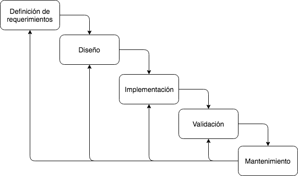
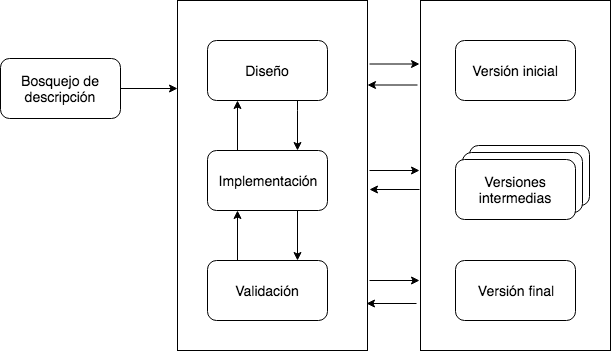

Análisis y diseño de Aplicaciones
Santiago Moreno
Indice
Introducción a la ingeniería de software
El proceso del software
- Para el desarrollo de un producto de software se necesita un conjunto estructurado de actividades
- Existen varios modelos de procesos.
Todos incluyen:- Especificación
- Diseño
- Implementación
- Validación
- Evolución
Clasificaciones
- Procesos dirigidos por planes
- Procesos ágiles
En la practica los procesos incluyen elementos de ambos enfoques
Modelo en cascada
Modelo en cascada - Problemas
Dificultad de responder a los cambios de requerimientos del cliente
Entrega tardía de valor para el cliente
Modelo Incremental
Modelo Incremental - Beneficios
Se reduce el costo de acomodar los cambios en los requisitos
Es más fácil obtener retroalimentación del cliente
Se pueden realizar entregas más rápidas de software
Modelo Incremental - Problemas
Trazabilidad de los cambios
Degradado del sistema
Especificación
- Relevamiento y análisis de requisitos
- Especificación de requisitos
- Validación de requisitos
Diseño
Diseña la estructura del sotware que satisface la especificación
- Diseño de Arquitectura: identificar todas las estructuras del sustema, los principales componentes, sus relaciones y como estan distribuidos.
- Diseño de la base de datos: diseñar las estructuda del sistema de datos y como van a ser representados en la base
- Diseño de la intefaz de usuario: se definen las interfaces ente los componentes del sistema
Implementación
El programa es desarrollado mediante la implementación.
Puede ser un programa único o varios programas.
El diseño y la implementación son actividades por lo general intercaladas
Validación
La validación y verificación pretende mostrar que el sistema se ajusta a su especificación y cumple con los requisitos del cliente
Validación - Etapas
- Pruebas Unitarias
- Pruebas de sistema o integración
- Pruebas de aceptación
Ingeniería de software
Es una disciplina de la ingeniería que se ocupa de todos los aspectos de la producción de software desde las primeras etapas de la especificación del sistema hasta el mantenimiento del sistema una vez que se ha puesto en uso.